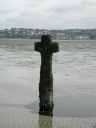
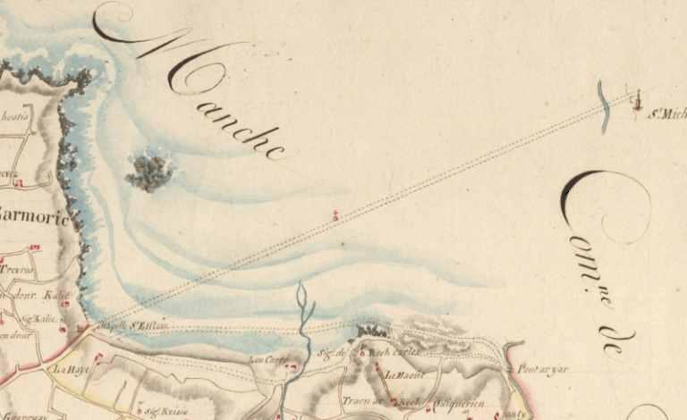

Le Pauvre Clerc
The Poor Clerk
Dialecte de Tréguier
|
Me 'm eus uset me boutoù - sous forme manuscrite : . par Mme de La Villemarqué: "Trom Doué Jannédic", Nizon, 1834 (?) . par J-M. de Penguern: tome 91: ar Ribot (et dans la revue "Al liamm" 34, 1952); tome 95 : Kemenerez Lannuon (= "Al liamm", 30, 1952). - sous forme de recueil : . par l'Abbé Guillerm, "Chants poplulaires de Cornouaille", "Lojaik" (Trégunc) -sous forme d'articles dans des périodiques: . par Marcel-Dubois, "Arts et traditions populaires", 1954,3, "Den brao demeus an arme" (Île de Batz, 1952, vers 21, 26). Me m'eus choazet ur vestrez - sous forme de recueil : . par A. Bourgeois dans "Kanaouennoù pobl", "Son a garantez" (Trégonneau) . par L. Herrieu dans "Guerzenneu ha Sonenneu Breiz Izel": "Glac'har a garantez" (Lanester). . par L. Herrieu et M. Duhamel dans "Guerzenneu ha soñnenneu Bro-Guened", "M'em es choéjet ur vestréz", 1911. . par Cheun Ar C'hann, dans "Digor an Abadenn": Me'm eus choazet evit mestrez", 1950. -sous forme d'articles dans des périodiques: . par Milin, dans "Gwerin" 1: "Me m'eus ur vestezik"; "Deut ganen, va mestrez". |
 La Croix de Mi-lieue de Grève  Passage entre Saint-Michel en Grève et Saint-Efflam (Cadastre de 1814) |
Me 'm eus uset me boutoù - in MS form : . by Mme de La Villemarqué (recipe book): "Trom Doué Jannédic", Nizon, 1834 (?) . by J-M. de Penguern: book 91: ar Ribot (and in the journal "Al liamm" 34, 1952); book 95 : Kemenerez Lannuon (= "Al liamm", 30, 1952). - to be published in books : . by l'Abbé Guillerm, "Chants poplulaires de Cornouaille", "Lojaik" (Trégunc) - for articles published in periodiocals: . By Marcel-Dubois, in "Arts et traditions populaires", 1954,3, "Den brao demeus an arme" (Island Batz, 1952, lines 21 to 26). Me m'eus choazet ur vestrez - to be published in books : . by A. Bourgeois in "Kanaouennoù pobl", "Son a garantez" (Trégonneau) . by L. Herrieu in "Guerzenneu ha Sonenneu Breiz Izel": "Glac'har a garantez" (Lanester). . by L. Herrieu and M. Duhamel in "Guerzenneu ha soñnenneu Bro-Guened", "M'em es choéjet ur vestréz", 1911. . by Cheun Ar C'hann, in "Digor an Abadenn": Me'm eus choazet evit mestrez", 1950. - for articles published in periodicals: . by Milin, in "Gwerin" 1: "Me m'eus ur vestezik"; "Deut ganen, va mestrez". |
Mélodie - Tune
(Arrangement: Chr. Souchon)
| Français | English |
|---|---|
|
Si j'ai meurtri mes pieds A suivre par monts et par vaux Ma douce bien-aimée, Qu'importe: la pluie, les grêlons, La neige sur la terre, Ne font obstacle à la passion De deux amants sincères. 2. Ma bien-aimée est une enfant Aussi jeune que moi. Elle va sur ses dix-sept ans, Et son joli minois, Ses regards tout de fougue empreints Et ses propos charmeurs Sont des chaînes où elle tient Prisonnier mon coeur... 3. Je me demande à quoi je puis La comparer. Je penche Pour la fleur, la rose-Marie, Petite rose blanche. Une perle, une fleur de lis Parmi les autres fleurs Qui, si elle s'ouvre aujourd'hui, Se ferme tout à l'heure. 4. Je ressemble de plus en plus, Moi qui lui fais la cour, A ce rossignol aperçu Sur l'aubépine un jour. Sitôt qu'il allait s'endormir Les épines le piquent Au haut d'un arbre on le vit fuir Pour chanter sa musique. 5. Ce rossignol, c'est mon histoire. Je suis comme un défunt Qui attendrait au purgatoire Que ses maux prennent fin. Le terme est enfin arrivé, C'est le jour maintenant Où dans sa maison j'entrerai Avec les "bazvalans" . 6. Mon étoile est fatale et mon Etat contre nature Et je ne connais de ce mon- De que maux qu'on endure. Je n'ai ni parents, ni amis, Hélas, ni père ou mère; Nul chrétien charitable qui M'aide sur cette terre. 7. Non, il n'est personne ici-bas Qui ait depuis l'enfance Enduré pour servir sa foi Tant d'amères souffrances. Aussi veux-je vous supplier Au nom de Dieu lui-même Et à genoux d'avoir pitié De ce clerc qui vous aime! 8. J'ai composé cette chanson Revenant par la Grève De Saint Michel et du pardon Où j'ai pu voir ma belle. Je vois que monte la marée M'isolant de la terre. Si je ne suis pas écouté, Voilà qui m'indiffère. |
And horribly barked my feet Following up hill and down dale My bonnie lass so sweet. Always will pouring rain, or hail Or snow lying on the ground Be for two hearts hurdles but frail When by love they are bound. 2. My sweetheart is a youthful lass. She's as young as I am. Her seventeenth year did not pass, She is a graceful lamb! The fiery glances she concocts, Her voice that I adore, Are the dungeon wherein is locked My heart for evermore. 3. What could she best, nobody knows, Be compared with? Maybe A tiny wee thing, the white rose That's called a rosemary. A little pearl on a shirt frill, A gold lily yellow That will open today, but will Be closed tomorrow. 4. I was like, O my darling rose, When I started to woo, The nightingale on hawthorn boughs That will hop to and fro, Till it, exhausted and dozing By a thorn stung and wronged, To the top of a tree takes wing Where it strikes up its song. 5. This nightingale, aye, I could be. Or else the soul deceased In the blaze of purgatory, Waiting to be released. I daresay time has come henceforth And the day at last dawns When I'll step over your threshold After the "bazvalans" . 6. A pitiless one was my fate, Inhuman my living. What does stamp, here below, my state? Nothing but suffering! I have no kith, I have no kin, No father, no mother, No Christian who, through thick and thin, Holds with me together. 7. Now in this world no one but me Has had so much to mourn; I never ceased distressed to be, Ever since I was born. That's why upon my knees I pray, As death is on the lurk That you should have pity some day With your unhappy clerk. 8. This ditty I made all along The sand strand on my way Back from Great Saint Michael's "pardon" Where she happened to stray. Though in the tide, swift like a mare, There's a risk to be drowned, I am not scared, I do not care, If I am turned down. |
Cliquer ici pour lire les textes bretons (imprimé et sténotypes).
For Breton texts (printed and handwritten records), click here.
|
Les quatre chansons de clercs
Ce chant et les trois suivants étaient précédés, dans les éditions de 1837 et 1845, de l'argument commun suivant: "Les quatre chansonnettes qu’on va lire sont des modèles d’un genre où excellent les kloer bretons; nous les avons choisies dans les quatre dialectes, de Tréguier, de Vannes, de Cornouaille et de Léon, afin de mettre le lecteur a même de comparer entre elles les poésies érotiques de chacun de ces pays. La troisième est antérieure à la fin du dernier siècle, car elle fait mention du marquis de Pontcalec décapité, comme nous l’avons vu, en 1720, Les autres doivent l’être également, ayant été chantées a ma mère dans son enfance par des personnes d’un âge avancé : mais il me serait impossible de déterminer d’une manière précise la date d’aucune d’elles." Dans l'édition de 1845, cette série est prolongée par des "notes et éclaircissements" vantant les mérites de ces pièces et allant même jusqu'à les comparer à celles que l'on doit à Pétrarque ou Dante! Un "clerc" ("kloareg", pluriel "kloer") était un séminariste qui ne se destinait pas forcément à devenir prêtre. Le mot était plus généralement un titre qu'on décernait aux gens réputés pour être tant soit peu instruites. Le "Barzhaz" contient plusieurs chants sur leurs amours le plus souvent malheureuses. Les chants du cahier de Keransquer Avant 1867, le chant publié au Barzhaz ne comprend que sept couplets. - "me m'eus uset va boutoù, implijet va zachoù " (j'ai usé les clous de mes souliers) devient platement "j'ai perdu mes sabots et déchiré mes pauvres pieds" (couplet 1); - "me m'eus choazet ur prizon da lakaat va c'halon" (j'ai choisi une prison pour y mettre mon coeur), devient "M'eus kemeret ur prizon..." (J'ai pris une prison). En voulant expurger le mot "choaz" (choisir) qu'il juge trop français, l'auteur modifie le sens, en supprimant l'idée de choix délibéré (couplet 2). C'est d'autant plus regrettable que les chants dont il s'inspire font partie d'une série de pièces qui évoquent toutes les souliers usés et commencent par la phrase "J'ai choisi une maîtresse". Tels sont ceux collectés par Cheun ar C'hann pour le recueil "Digor an Abadenn" (en 1942), et par Loeiz Herrieu et Maurice Duhamel (publié en 1911) - le mot "meuliñ" (louer, célébrer) du modèle est remplacé par l'horrible "hevelebekaat" (identifier) au début du 3ème couplet. - au saisissant "Ma kouskfemp en ur stroll, allas, gant levenez" (que nous dormions, "accouplés", hélas, avec joie) [à la fin du purgatoire], où se suivent les mots antinomiques "hélas" et joie", La Villemarqué substitue une phrase d'une affligeante banalité: "Ma z'in-me barzh ho ti, gant ar Vazhvalaned" (que j'entre dans votre maison avec les bazvalans ). Le mot "stroll", qui signifie habituellement "groupe, amas", désigne ici le lien, dit "couple" qui sert à attacher deux par deux les chiens de chasse (le dictionnaire de Dom Grégoire de Rostrenen fournit l'exemple "Torret eo ar stroll" et le traduit "La couple est rompue"). La Villemarqué a-t-il été choqué par la verdeur du propos? (couplet 5). - enfin, on est étonné de ne pas trouver dans le chant manuscrit, ni dans aucun des chants cités sur cette page, le mot "kloarek" (clerc) qui justifie le titre de son pendant du Barzhaz, "Ar c'hloarek paour" (le pauvre clerc) et son classement dans la série des quatre chants de clerc (couplet 7, dernière ligne: "ouzhon truez", pitié de moi, remplacé par "ouzh ho kloarek truez", pitié de votre clerc). Il n'est pas impossible, il est même probable que ces chants au style soutenu soient l'oeuvre de clercs, mais rien ne l'indique dans le corps du texte. La Lieue de Grève et la Croix de Mi-grève L'argument de 1867, commence ainsi: La tradition locale eut qu'elle ait été élevée par Saint Efflam à l'endroit où il prit pied en Bretagne en venant d'Irlande. On trouvera un exposé très complet du Pr. Pierre Le Roux sur les chansons de clercs, à propos du chant Er goues neuez |
The four "kloareg" songs
This song and the next three were preceded in the 1837 and 1845 releases by a common "Argument" as follows: "The four ditties you are about to read belong to a genre wherein Breton kloer ("clerks") prove very proficient; we chose them, each in a different dialect: Tréguier, Vannes, Cornouaille and Leon, so as to enable the comparison between the four forms of love poetry. The third song should be older than the end of the past century, since it mentions the Marquis de Pontcallec who was beheaded, as we know, in 1720. So should be the others, too, as they were sung to my mother, when she was a child, by elderly persons, but I am unable to determine their age more accurately." In the 1845 edition this series is prolonged by "Notes and explanations" extolling the merits of these pieces and asserting that they may compare with Petrarch's or Dante's poetry! A "clerk" ("kloareg", plural "kloer") was a seminarist who did not systematically intend to become a priest. Te word was more generally a title applied to people supposed to be more or less educated. The "Barzhaz" contains several songs dealing with clerks' mostly unhappy loves. The songs in the first Keransquer copybook Before 1867, the song, as published in the Barzhaz, had only seven couplets. - "me m'eus uset va boutoù, implijet va zachoù " (I wore the heads off the nails of my shoes) becomes a dull "I lost my clogs and barked my poor little feet" (stanza 1); - "me m'eus choazet ur prizon da lakaat va c'halon" (I chose a prison to lock up my heart) has become "M'eus kemeret ur prizon..." (I've taken a prison...). In expelling the word "choaz" (to choose) which he considers "too French", the author modified the meaning as he suppresses the idea of a deliberate choice (stanza 2). This is all the more regrettable, since the songs on which he draws are part of a series involving worn out shoes and beginning with the sentence "I've chosen a sweetheart". Such are the songs collected by Cheun ar C'hann for the songbook "Digor an Abadenn" (en 1942), and by Loeiz Herrieu and Maurice Duhamel (collection published in 1911) - the word "meuliñ" (to praise, to celebrate) in the model is replaced by the ugly "hevelebekaat" (identify) at the beginning of the third stanza. - the astonishing "Ma kouskfemp en ur stroll, allas, gant levenez" (that we may sleep coupled up, alas, in contentment) where two antinomical words, "alas" and "contentment" are put together, must yield, in La Villemarqué's version to a hopelessly commonplace "Ma z'in-me barzh ho ti, gant ar Vazhvalaned" (and I'll enter your house along with the bazvalans ). The word "stroll" means, as a rule, a heap, a whole party, but here it means the bond by which two hunting hounds are coupled together. In the dictionary of the Reverend Gregory of Rostrenen we find the example: "Torret eo ar stroll" translated as "the coupling leash is broken". Maybe La Villemarqué was shocked by the forthrightness of this language (stanza 5). - and we are also puzzled by another fact: nowhere, neither in the hand-written song nor in the connected songs quoted on this page, does the word " kloarek " appear, though it justifies the title imparted to the Barzhaz version of the song "Ar c'hloarek paour" (the poor clerk) and its filing among other four "songs of clerks" (stanza 7, last line: "ouzhon truze": "pity me" replaced by "ouzh ho kloarek truez", "feel pity for your clerk". It is not impossible, it is even probable that these songs which use an elevated language were written by clerks, but nothing is found in the text to corroborate it. Strand-League and Strand Half-League Cross The 1867 "Argument" begins thus: Local tradition has it that it was first erected by Saint Efflam at the very spot where he landed in Brittany, coming from Ireland. A very exhaustive survey of the "Kloarek songs" issue by Pr. Pierre Le Roux is appended to the song Er goues neuez . |